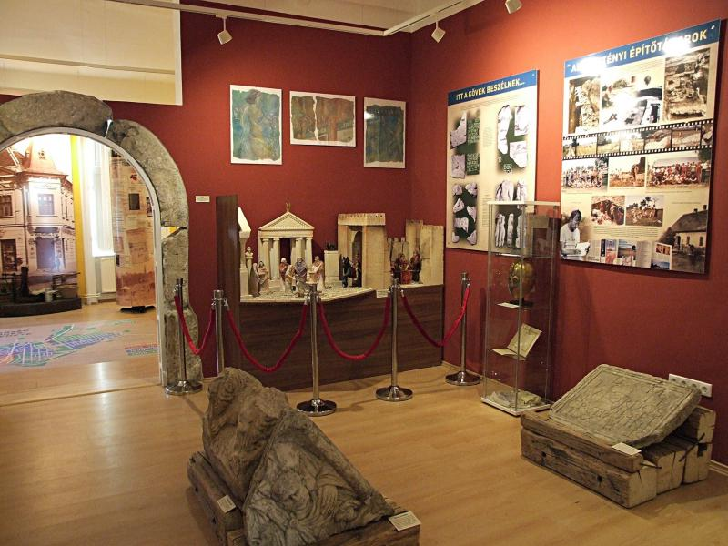

|
MENÜPONTJAINK: * Főoldal * Kiállítások és árak Látogatók száma: 00042 |
Bemutatkozás
Múzeumunk 1924-ben nyitotta meg kapuit a látogatók előtt. Célunk, hogy megőrizzük városunk régi emlékeit és tárgyait az utókor számára.  Állandó kiállításaink:
|